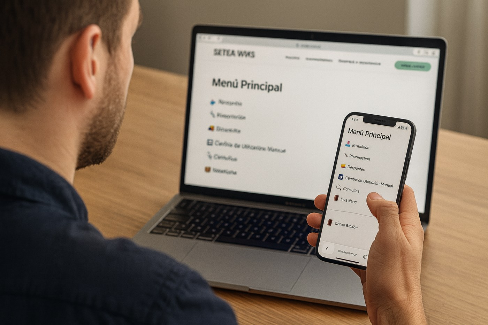
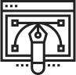

Gestioná tu almacén con inteligencia y control total.
Optimizá cada etapa de tus operaciones logísticas con nuestro WMS moderno, flexible y escalable. Reducí errores, mejorá la eficiencia y tomá decisiones basadas en datos en tiempo real.
Beneficios
Pone en marcha tu WMS en semanas, no meses. Nuestra arquitectura modular y equipo especializado nos permite acelerar cada fase del despliegue..
Implementación Ágil
Pone en marcha tu WMS en semanas, no meses. Nuestra arquitectura modular y equipo especializado nos permite acelerar cada fase del despliegue..
Adaptación sin Fricciones
Configuramos procesos según tu operación sin necesidad de desarrollos eternos. Integramos fácilmente con tu ERP y sistemas actuales.
Retorno Rápido de la Inversión
Al comenzar a operar en menor tiempo, empezás a ahorrar antes. Menos interrupciones, más productividad desde el día uno.
Soporte Dedicado desde el Inicio
Te acompañamos con un equipo de onboarding experto para que la implementación sea fluida, sin sorpresas ni cuellos de botella.
Funcionalidades
Trabajamos codo a codo con tu equipo para configurar, adaptar e implementar tu WMS de forma eficiente. Desde el primer día te acompañamos con soporte técnico, entregas a tiempo y mejoras continuas pensadas para tu operación real.
Tecnología y Arquitectura

Nuestro WMS está desarrollado con arquitectura moderna, segura y adaptable. Ya seas una pyme o una gran operación logística, podés escalar sin fricciones, con respaldo automático de datos, alta disponibilidad y un entorno preparado para integrarse fácilmente con tus sistemas actuales.
Integraciones
Nuestro WMS se integra fácilmente con los principales sistemas del mercado. También conectamos con TMS para una gestión logística completa, ágil y automatizada.
Integramos con sistemas ERP como SAP, Odoo y NetSuite para sincronizar inventarios, órdenes de compra y facturación en tiempo real. Tu operación se mantiene alineada de punta a punta, desde finanzas hasta logística.
Conectamos tu almacén directamente con plataformas como Shopify, MercadoLibre y Magento. Agilizá la preparación y despacho de pedidos online, evitando errores de stock y mejorando la experiencia del cliente final.
Integramos con soluciones TMS para automatizar la gestión de envíos, rutas y transportes. Desde la salida del almacén hasta la entrega final, mantené trazabilidad y eficiencia total en cada movimiento.
¿Por qué elegirnos frente a otros WMS?
Sabemos que existen opciones como SAP, Oracle o Manhattan. Pero nuestra solución fue diseñada para empresas que buscan agilidad, implementación rápida, soporte cercano y una experiencia de uso realmente simple. Mirá cómo nos comparamos:
Nuestro WMS crece con vos: empezá simple, escalá sin límites.

Menos tiempo de espera. Menos costos ocultos. Más valor desde el primer mes.
Una curva de aprendizaje mínima y una experiencia pensada para tu equipo, no al revés.
Contactanos
Completá el formulario y te contactamos para agendar una demo sin compromiso.
También podés escribirnos por email o WhatsApp.
Te ayudamos a encontrar la solución ideal para tu operación logística.